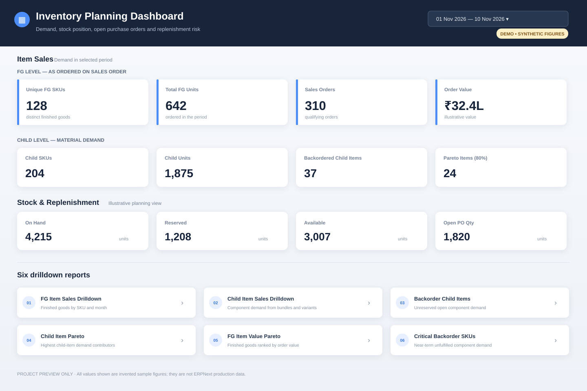

A dashboard source project with six drilldowns for finished goods, child-item demand, backorders, Pareto analysis, and critical SKUs.
DEMO ONLY · SYNTHETIC FIGURES

All quantities and values shown above are invented examples. They do not come from the ERPNext production system.
1 · FG Item Sales DrilldownSales Order demand grouped by finished-good SKU with monthly quantities.2 · Child Item Sales DrilldownMaterial demand expanded from product bundles, variants, and directly sold items.3 · Backorder Child ItemsUnreserved component demand remaining on open Sales Orders.4 · Child Item ParetoRanks child SKUs by contribution to total demand.5 · FG Item Value ParetoRanks finished goods by Sales Order value.6 · Critical Backorder SKUsNear-term component requirements tied to open deliveries.